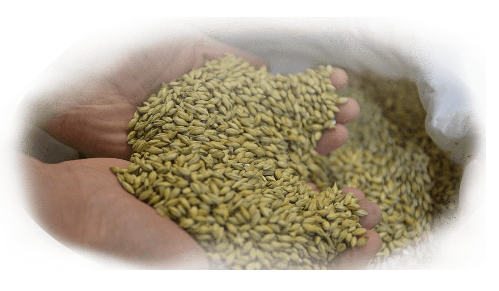

En chiffres

10% de degré d'alcool.
3 ans de conservation.
11 La couleur.
24 L'amertume.
900.000 Litres produits/an.
Cette bière était autrefois produite à l'abbaye de la Paix Dieu, ou le calendrier lunaire jouait un rôle central.
100% naturelle La Paix Dieu est le fruit d’un travail d’artisan, n’utilisant que des méthodes de fabrication à l’ancienne, presque identiques à celles utilisées par l’abbaye il y a plusieurs siècles. La Paix Dieu est ainsi préservée de toute filtration ou pasteurisation.

La production est gérée par la Brasserie Caulier qui brasse des bières
100% naturelles appliquant nos méthodes de fabrication artisanales.
Le houblon, le malt et le sucre sont sélectionnés soigneusement auprès
de producteurs locaux. L’eau est tirée directement du puits de la
brasserie, et la levure est cultivée par nos soins.
10% de degré d'alcool.
3 ans de conservation.
11 La couleur.
24 L'amertume.
900.000 Litres produits/an.